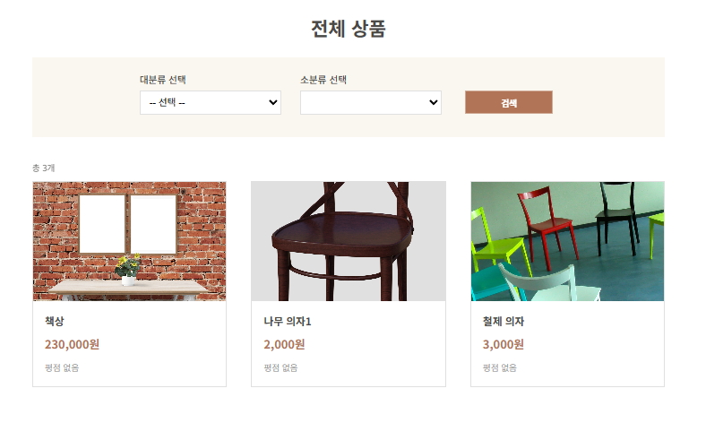
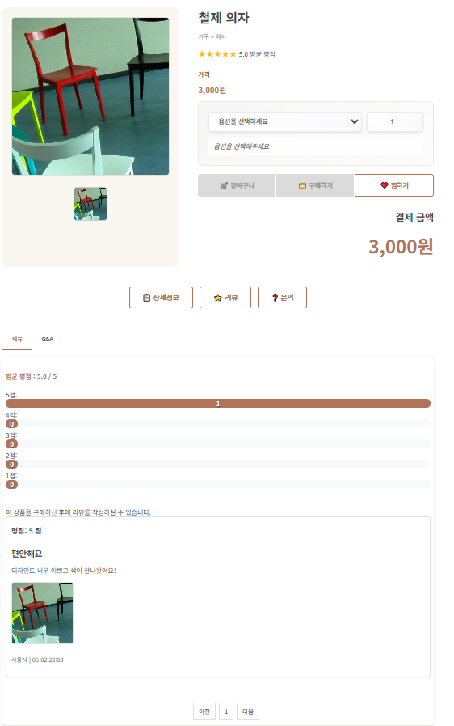
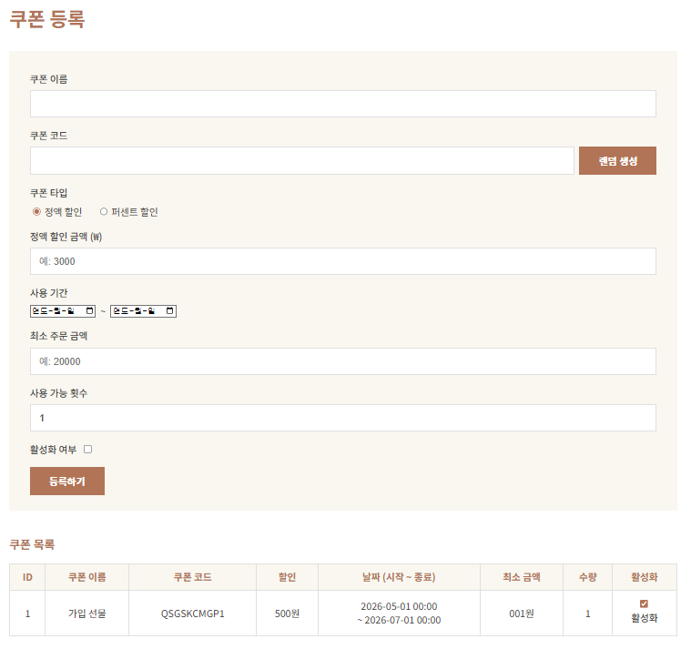
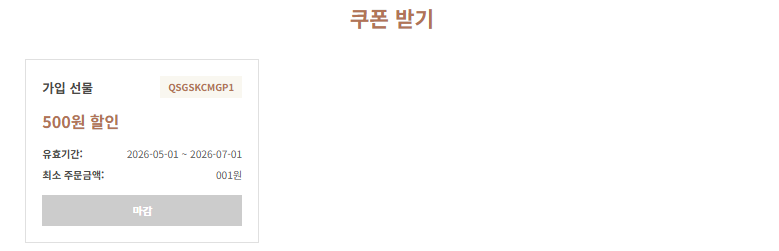
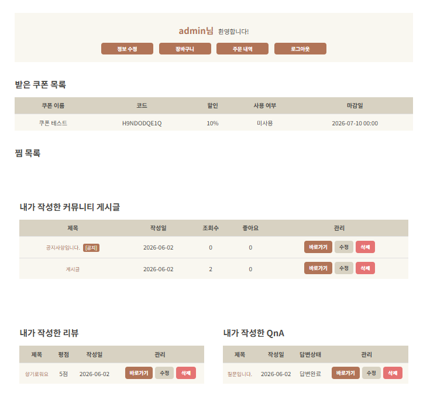
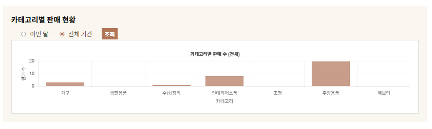
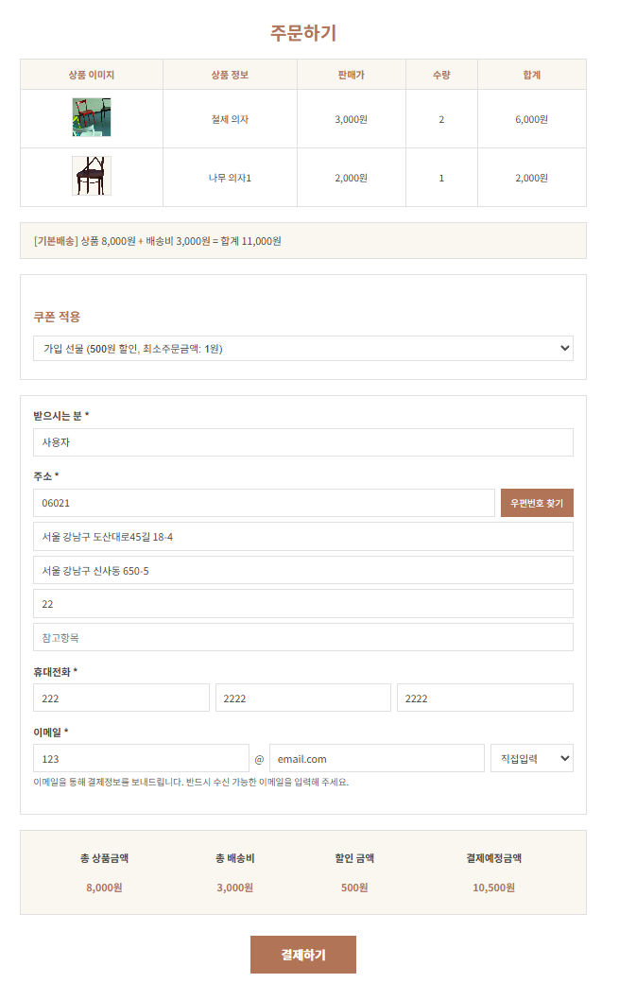

01 · OVERVIEW
프로젝트 개요
WooriZip은 인테리어 제품 쇼핑과 커뮤니티를 통합한 e-commerce 플랫폼입니다. 단순한 CRUD 쇼핑몰에 그치지 않고, 사용자의 실제 행동(상품 조회·장바구니 추가·구매)을 DB에 자동으로 누적하고 이를 LightFM 협업 필터링 모델의 학습 데이터로 활용하는 개인화 추천 시스템을 직접 설계했습니다.
5인 팀 프로젝트에서 팀장을 맡아 기능별 역할 분배, Git 브랜치 전략(feature → develop → main), PR 리뷰 프로세스를 주도했습니다. 개인 담당 파트는 회원 관리 로직 전체, 쿠폰 시스템 전체, 사용자 행동 로그 수집 → 추천 학습 데이터셋 구성 → LightFM 모델 학습 → FastAPI 추론 서버 구현 → cold start fallback, 그리고 관리자 대시보드입니다.
02 · SCREENS
주요 화면








03 · ARCHITECTURE
시스템 구조 및 데이터 흐름
Spring MVC 단일 서버와 Python FastAPI 추천 서버(Google Colab + ngrok)가 분리된 구조입니다. 추천 요청 시에만 HTTP POST 방식으로 통신하므로 추천 서버 장애가 메인 서버에 전파되지 않습니다.
(브라우저)
Controller
행동
Interceptor
DB
(추천 요청)
(Colab+ngrok)
모델
04 · RECOMMENDATION SYSTEM
LightFM 협업 필터링 추천 엔진
사용자 행동 로그 기반의 협업 필터링 추천 시스템을 처음부터 직접 설계했습니다. 로그 수집 → 데이터셋 구성 → 모델 학습 → API 서빙 → cold start 처리의 전체 파이프라인을 단독으로 담당했습니다.
① 행동 로그 자동 수집 — RecommendInterceptor
Spring의 HandlerInterceptor를
구현한 RecommendInterceptor가
컨트롤러 진입 전(preHandle)
요청 URI를 분석해 행동 유형별로 로그를 자동 저장합니다.
컨트롤러 코드를 수정하지 않고 크로스커팅 관심사(cross-cutting concern)로 처리됩니다.
GET /products/{id}
접속 시 자동 기록. URI 패턴 정규식으로 productId를 추출하여 저장합니다.
POST /cart/add
요청 시 Referer 헤더에서 productId를 추출하고, 폼 파라미터에서 modelId를 파싱하여 기록합니다.
POST /recommend/log로
Ajax 전송. 인터셉터가 request body JSON을 직접 파싱하여 저장 후 return false로 완료합니다.
② 학습 데이터셋 구성 — 가중치 기반 상호작용 행렬
DB에 누적된 RecommendLog
테이블(user_id, model_id, action_type, weight, timestamp)을 CSV로 추출합니다.
pandas DataFrame으로 user/item ID를 정수 인덱스로 매핑한 뒤,
scipy.sparse.coo_matrix로
희소 상호작용 행렬을 구성합니다.
동일 사용자-상품 쌍에 여러 행동이 있을 경우 weight 값이 누산되어 관심도가 강화됩니다.
③ LightFM 모델 — WARP 손실 함수
LightFM은 사용자와 아이템의 잠재 벡터(latent vector)를 내적해 선호도를 예측하는 행렬 분해 기반 모델입니다. 손실 함수로 WARP(Weighted Approximate-Rank Pairwise)를 선택했습니다. WARP는 긍정 상호작용 아이템이 부정 아이템보다 높은 순위에 오도록 최적화하는 순위 학습(ranking learning) 방식으로, 클릭·구매 같은 양성 피드백만 존재하는 암묵적(implicit) 피드백 데이터에 특히 적합합니다.
모델 하이퍼파라미터
· no_components = 32 — 잠재 요인 차원 수 (사용자·아이템 임베딩 크기)
· loss = 'warp' — 순위 기반 쌍 손실 함수
· epochs = 10,
num_threads = 2 — fit_partial()로 에폭마다 지표 측정
④ 모델 성능 지표 (더미 데이터 기반 실험)
⑤ FastAPI 추론 서버 (Google Colab + ngrok)
학습된 모델을 pickle로
직렬화하고 FastAPI 서버로 감싸
POST /recommend
엔드포인트를 제공합니다. Google Colab에서 uvicorn으로 실행하고 ngrok으로 공개 URL을 발급받아
Spring Boot가 HTTP 방식으로 호출합니다. 추천 서버와 메인 서버가 완전히 분리되어
서버 장애가 서로 전파되지 않습니다.
API 명세
POST
/recommend
Request →
{ "user_id": 1, "k": 6 }
Response →
{ "recommended": [12, 34, 7, 25, 3, 18] }
미등록 사용자 →
{ "recommended": [] }
(cold start fallback은 Spring Boot에서 처리)
⑥ Cold Start Fallback
학습 데이터에 없는 신규 사용자의 user_id가 FastAPI로 전달되면
if user_id_raw not in user_map
조건으로 빈 배열을 반환합니다.
Spring Boot가 빈 결과를 감지하면 전체 구매·조회 수 기준 인기 상품 top-k를
대신 표시하는 fallback 로직을 적용했습니다.
신규 사용자도 빈 화면 없이 의미 있는 추천을 받을 수 있습니다.
05 · KEY FEATURES
담당 구현 기능
06 · TROUBLE SHOOTING
문제 해결 과정
문제: Interceptor에서 request body를 읽은 후 Controller에서 재사용 불가
POST /recommend/log
요청에서 Interceptor가
request.getReader()로
JSON body를 읽으면 InputStream이 소진되어, 이후 Controller가 동일 body를 다시 읽을 수 없는 문제가 발생했습니다.
/recommend/log
경로는 body 파싱과 로그 저장 후
response.getWriter().write("logged")로
직접 응답하고 return false로
Controller 진행을 중단했습니다.
Controller는 빈 메서드로 선언만 해두어 Spring Security URL 매핑만 유지했습니다.
문제: 회원 탈퇴 시 FK 제약 위반으로 삭제 실패
Users 엔티티 삭제 시 Order, CartItem, QnaPost, ReviewPost 등 외래 키를 가진 테이블이
먼저 남아 있어
DataIntegrityViolationException이
발생했습니다.
UserService.delete()에서 QnA → 리뷰 → 주문 항목 → 주문 → 장바구니 항목 → 장바구니 → 유저
순서로 명시적으로 삭제했습니다. UserCoupon처럼 빈번히 삭제되는 연관 엔티티에는
@OnDelete(action = OnDeleteAction.CASCADE)를
병행 적용해 DB 레벨에서도 안전하게 처리했습니다.
문제: 신규 사용자가 FastAPI에 추천 요청 시 KeyError 발생
모델 학습 데이터에 없는 user_id가 FastAPI로 전달될 경우
user_map[user_id]
조회에서 KeyError가 발생하며 서버 오류(500)로 이어졌습니다.
FastAPI에서
if user_id_raw not in user_map
조건으로 빈 배열을 반환하도록 수정했습니다.
Spring Boot가 빈 추천 결과를 감지하면 전체 인기 상품 목록으로 자동 대체하는
fallback 로직을 추가하여 cold start 문제를 해결했습니다.
07 · RETROSPECTIVE
프로젝트 회고
추천 시스템을 외부 SaaS 없이 처음부터 직접 구현한 것이 가장 큰 성취였습니다. Interceptor 패턴으로 로그를 비침투적으로 수집하고, LightFM 학습부터 FastAPI 서버 분리·배포까지 전체 파이프라인을 완성했습니다. 팀장으로서 6주 일정 안에 충돌 없이 머지를 완료한 점도 의미 있었습니다.
실제 사용자 데이터 대신 더미 데이터로 모델을 학습해 실전 성능 검증이 어렵습니다. ngrok 무료 플랜의 세션 재시작 시 URL이 바뀌어 운영 안정성이 부족하고, 추천 결과가 실시간 반영되지 않아 주기적 재학습 자동화가 필요합니다.
협업 필터링의 학습 원리(행렬 분해, WARP 손실)와 암묵적 피드백 데이터 처리 방법을 깊이 이해했습니다. Spring HandlerInterceptor로 AOP 방식의 로그 수집을 구현하면서 크로스커팅 관심사 분리의 실질적인 가치를 체감했습니다.
실제 사용자 데이터로 모델을 재학습하고, 배포 환경을 AWS EC2로 전환해 ngrok 의존성을 제거하고 싶습니다. Airflow나 GitHub Actions로 주기적 재학습 파이프라인을 구축하고 A/B 테스트로 추천 품질을 개선해 보고 싶습니다.